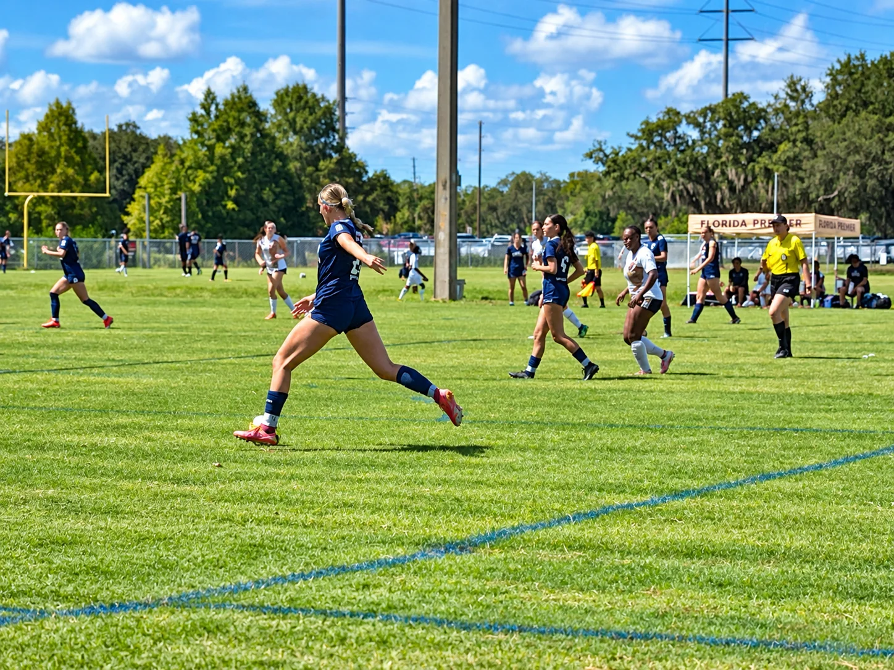

SAMANTHA HENGEL · DEFENDER · 2028
CLASS2028
POSITIONDefense
HEIGHT5'10"
NUMBER#2
GPA3.25
CLUBWest Florida Flames
FILM FIRST
See the decisions.
Then the player.
College coaches can go straight to Samantha’s match footage, then move into her player profile, schedule and academics without hunting through links.
#2 · RIGHT DEFENSE · WEST FLORIDA FLAMES
COACH ACCESS